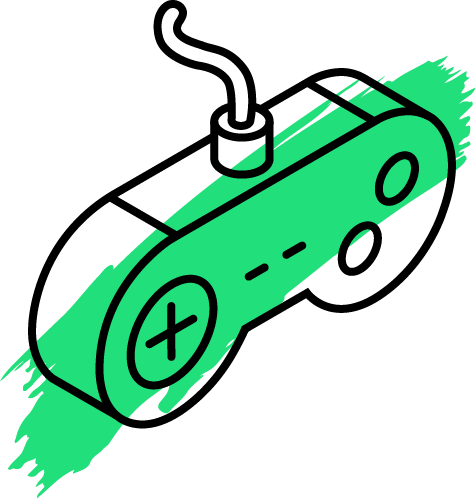
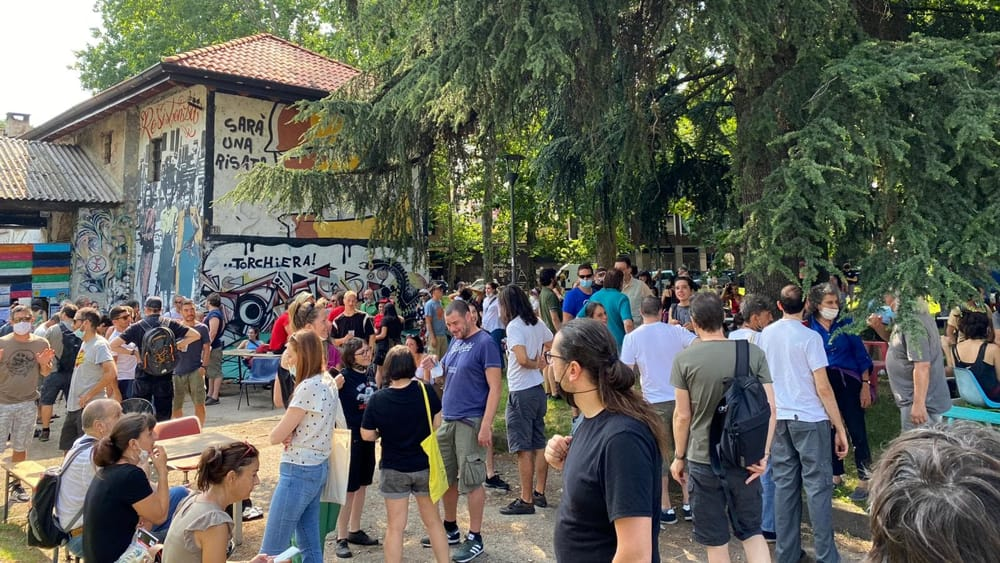
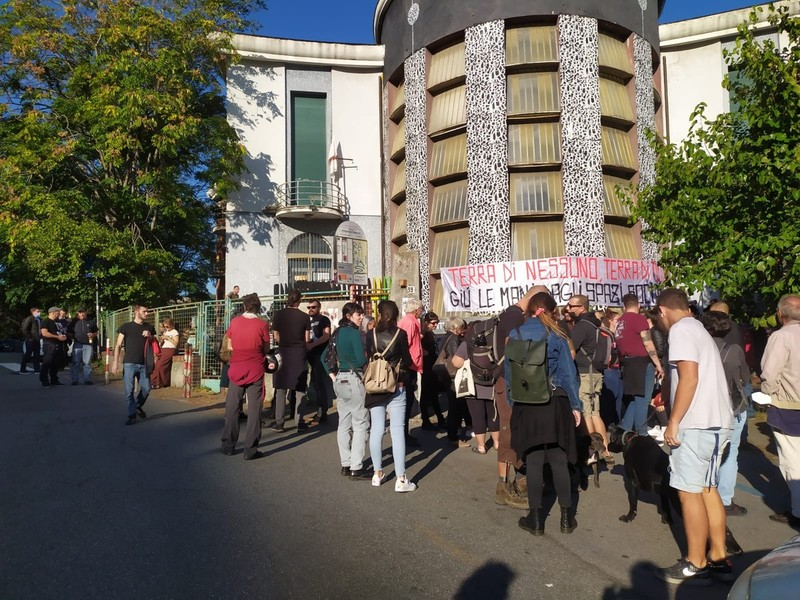
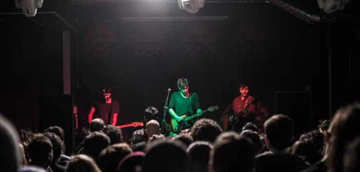
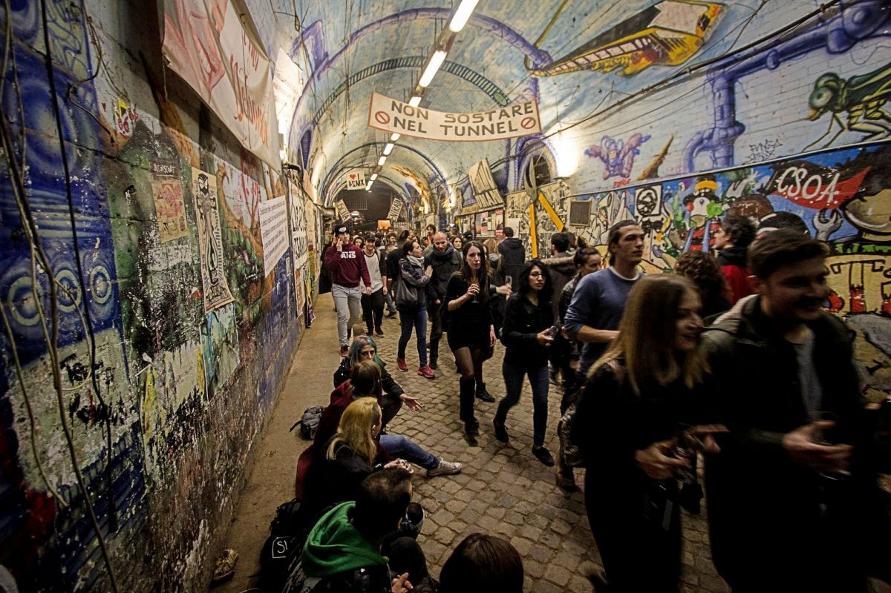
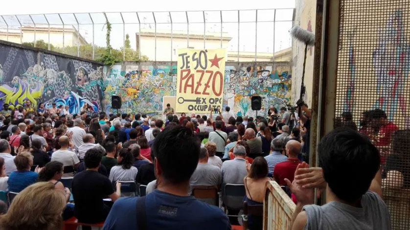

questa è zona warpa!
la festa del videogioco ribelle e itinerante
Vogliamo riaccendere la miccia di una forma di comunicazione ed espressione potentissima, dando spazio a chi sviluppa, a chi vorrebbe formarsi e iniziare a sviluppare, o anche solo a chi vuole giocare e divertirsi.
Il mondo del videogioco in Italia è sempre più monopolizzato dalle logiche del profitto. Viene raccontato solo nei suoi aspetti commerciali e per questo il suo potenziale sociale e sovversivo viene disinnescato.
1.
Un evento accessibile e inclusivo in tutti i sensi. No barriere economiche, architettoniche, geografiche, discriminatorie. I videogiochi devono essere per tuttx.
2.
Un punto di incontro per chi sviluppa giochi, a tutti i livelli. Sviluppatorx, romhacker, game designer, etc.
3.
Un'occasione per mostrare, testare, diffondere le proprie opere.
4.
Un punto d’accesso non respingente per chi vorrebbe entrare nel mondo dei videogiochi. Abbiamo bisogno di risorse e scambio di sapere. Pochissimx possono permettersi i costi esorbitanti delle “università del videogioco” presenti in Italia.
5.
Creare un ponte culturale con l’underground videoludico di altri paesi, prediligendo quelli solitamente esclusi dai discorsi mainstream sul videogioco (leggasi: tutti quelli che non sono Europa, Stati Uniti, Cina e Giappone).
6.
Creare un’occasione gioiosa di socialità, incoraggiando nuove alleanze e collaborazioni.
Siamo il collettivo WARPO.
Non agiamo per fini di lucro. Non abbiamo sponsor. Ci finanziamo dal basso. Vogliamo abbattere le barriere d’accesso al mondo dei videogiochi.
I videogiochi sono per tuttx e sono un mezzo di comunicazione potentissimo. Per questo l’accesso al sapere necessario a crearli va diffuso il più possibile, liberamente e gratuitamente.
Nella ZONA WARPA tuttx potranno esporre i loro giochi. Gratis.
ZONA WARPA è una distorsione spazioculturale dove chi vuole fare giochi incontra chi già li fa.
È un punto di accesso al mondo dello sviluppo, dove la cultura videoludica è un bene collettivo e non un prodotto.
Conosciamoci, uniamoci, alleiamoci.
Riprendiamoci i videogiochi.
ZONA WARPA è un evento antifascista, antisessista e antirazzista. Non è un evento for profit e tutte le persone che ci lavorano sono volontarie. Abbi rispetto di tutte le persone che incontrerai.
I luoghi che ospitano ZONA WARPA non sono dei locali. Sono spazi autogestiti e collettivi. Abbi rispetto degli spazi. Non sporcarli, non rompere niente e non fare nulla che possa disturbare o ostacolare le altre attività.
ZONA WARPA è un evento inclusivo, nel senso che non esclude nessunx. Affinché lo sia, anche il tuo comportamento dovrà essere umano e rispettoso. Rispetta l’identità e l’espressione di genere altrui, l’orientamento sessuale, le disabilità, le neurodivergenze, i corpi, le etnie, gli spazi. La libertà è un bene collettivo: tutelala.
Essere gentili in un mondo cattivo è un atto rivoluzionario. Qualsiasi forma di violenza, intimidazione o molestia non sarà tollerata.
Se vedi atteggiamenti problematici o ne sei vittima, contatta un membro del collettivo Warpo.

torchiera
workshop

16.00 - 19.00
concerto
21.00 - 00.00
La distorsione spazioculturale della Zona Warpa parte da Milano, in Torchiera. Ci saranno talk, workshop, spazio espositivo gratuito e un momento di gioco con DOBOTONE, portato da Videogamo, lo studio argentino ospite di questa edizione. In chiusura: concerto chiptune con Kenobit e Rico Uochi Toki. Programma workshop/talk e ospiti musicali extra in definizione.
ingresso a donazione

buridda
workshop
16.00 - 19.00
concerto
21.00 - 00.00
Il camper Warpo si manifesterà a Genova, al Buridda. Ci saranno talk, workshop, spazio espositivo gratuito e un momento di gioco con DOBOTONE, portato da Videogamo, lo studio argentino ospite di questa edizione. In chiusura: concerto chiptune con Kenobit e Rico Uochi Toki. Programma workshop/talk e ospiti musicali extra in definizione.
ingresso a donazione

Ottobit Artlab
workshop
16.00 - 19.00
concerto
21.00 - 00.00
La prima tappa toscana confermata è all’Ottobit Artlab. Ci saranno talk, workshop, spazio espositivo gratuito e un momento di gioco con DOBOTONE, portato da Videogamo, lo studio argentino ospite di questa edizione. In chiusura: concerto chiptune con Kenobit e Rico Uochi Toki. Programma workshop/talk e ospiti musicali extra in definizione.
ingresso a donazione

forte prenestino
workshop
16.00 - 19.00
concerto
21.00 - 00.00
La tappa romana della Zona Warpa sarà al Forte Prenestino. Ci saranno talk, workshop, spazio espositivo gratuito e un momento di gioco con DOBOTONE, portato da Videogamo, lo studio argentino ospite di questa edizione. In chiusura: concerto chiptune con Kenobit e Rico Uochi Toki. Programma workshop/talk e ospiti musicali extra in definizione.
ingresso a donazione

ex-opg
workshop
16.00 - 19.00
concerto
21.00 - 00.00
L’ultima tappa ufficiale del primo tour della Zona Warpa sarà a Napoli, all’EX OPG. Ci saranno talk, workshop, spazio espositivo gratuito e un momento di gioco con DOBOTONE, portato da Videogamo, lo studio argentino ospite di questa edizione. In chiusura: concerto chiptune con Kenobit e Rico Uochi Toki. Programma workshop/talk e ospiti musicali extra in definizione.
ingresso a donazione